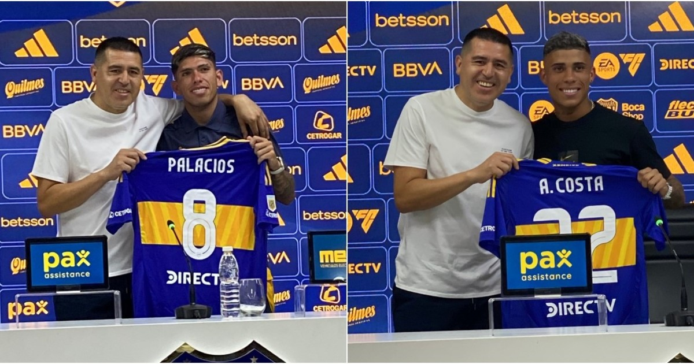

Boca gana con autoridad por copa argentina
Boca se impuso con jerarquía y clara superioridad ante Argentino de Monte Maíz.
“Nos preparamos para todo”. Ese fue el mensaje del Changuito Zeballos, una de las figuras de Boca, que se impuso por 5 a 0 sobre Argentino de Monte Maíz, en la presentación xeneize en la Copa Argentina. Zeballos, justamente, Merentiel, Janson, Giménez y Zenón convirtieron los goles.
El equipo que dirige Fernando Gago va por todo: la Copa Argentina, el torneo Apertura, la Copa Libertadores y el Mundial de Clubes. Tuvo dos ráfagas goleadoras: en el final de cada etapa. Marcó dos en el primer capítulo y otros tres, en el cierre del espectáculo. No hubo equivalencias frente a un equipo del Federal A. Ander Herrera hizo su presentación, líder con voz de mando en la zona central.

Riquelme presenta los nuevos refuerzos
Tras sus respectivas primeras impresiones, este jueves dos de los nuevos refuerzos se sentaron ante los micrófonos de Boca Predio junto con Juan Román Riquelme y fueron presentados en conferencia de prensa. Es que el chileno Palacios y Costa recibieron su primer contacto con los medios siendo futbolistas xeneizes y respondieron a todo tipo de consultas.
Con JRR en la sala de prensa, los dos primeros refuerzos de Boca comenzaron a dar sus sensaciones en sus primeros días como jugador xeneize.
Las declaraciones de Carlos Palacios: la idolatría por Riquelme y el deseo de jugar en La Bombonera
Primeramente, el chileno tomó la palabra y dejó sus sensaciones. Antes, Riquelme se expresó al respecto y llenó de elogios a Palacios. “A Carlos lo quería mucho para Boca y él quería jugar acá.Hizo mucha fuerza para eso“, expresó. Luego, le dejó la sala de prensa libre para que se presente.
“Fue largo todo, en dos mercados me buscaron y yo estaba con ansias de cosas nuevas, sobre todo de jugar acá. Para mi es algo inolvidable. Los dos partidos que ya jugué me sirvieron muchísimo y estoy muy contento de estar acá“, comenzó el volante.
